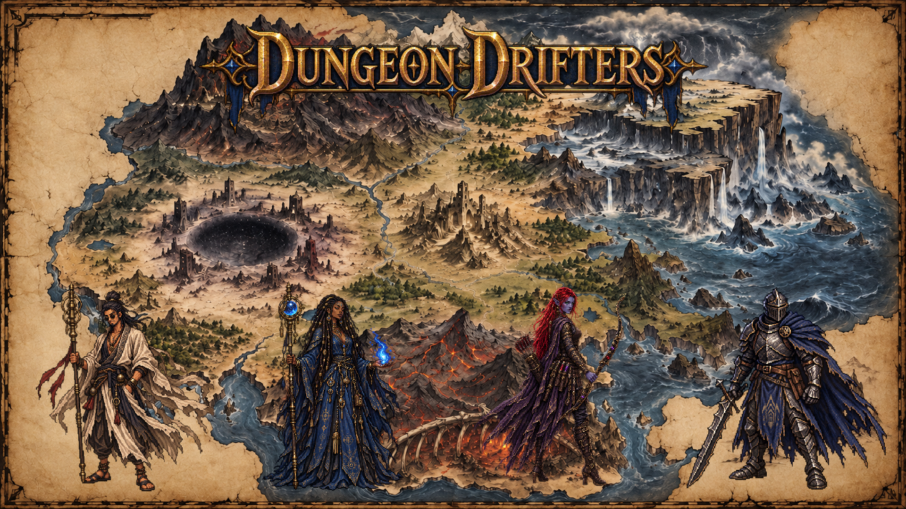

Rhom-Ghal
Iron-Spires, mountain vanguards, and a discipline built to survive thin air, smoke, exhaustion, and pain.
The world of Dungeon Drifters
A world of buried civilizations, fallen kingdoms, violent seas, and things beneath the earth that may not be dead.

Four horizons
The Drifters do not come from the same story. Their homelands shape the tools they carry, the powers they trust, and the things they refuse to name.
Iron-Spires, mountain vanguards, and a discipline built to survive thin air, smoke, exhaustion, and pain.
Vanished cities and contradictory records, where ancient sorcery can solve a problem and create another somewhere far away.
The ever-burning arteries of a petrified colossus. Alchemical surveyors read the air and keep volatile passages alive.
Storm-beaten villages and the open edge of the sea, where wind, water, and lightning answer to a single current.
The playable surface route